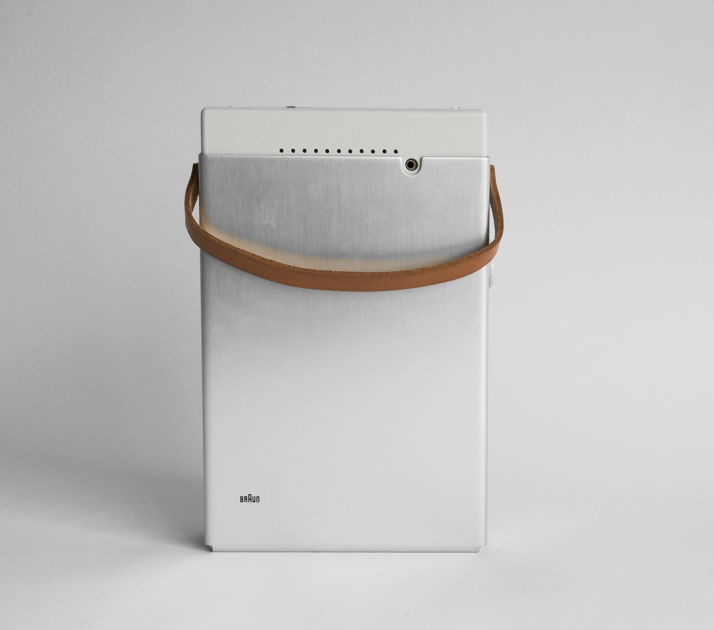
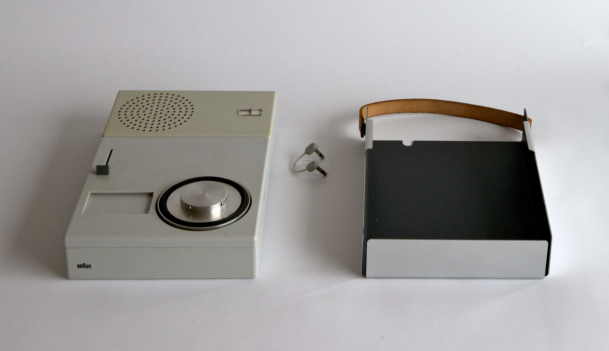

PORTABLE TRANSISTOR
TP1

(
1959
)

(
PORTABLE TRANSISTOR
)
Designed in 1959 for Braun, is a compact record player with an integrated radio. Its innovative and minimalist design combines functionality and aesthetics, featuring a modular structure that allows the speaker to be detached from the main body. It is a clear example of Rams’ rational and timeless approach to industrial design.
(
RADIO & PHONOGRAPH ALL-IN-ONE
)